BLOCK NHÁNH VÀ BLOCK PHÂN NHÁNH TRÊN ĐIỆN TÂM ĐỒ
9.1. Block nhánh phải (RBBB) — Điện tâm đồ
Block nhánh phải (Right Bundle Branch Block – RBBB)
Phức bộ QRS giãn rộng
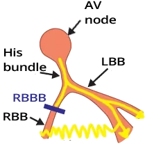
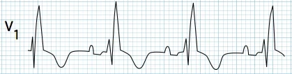
Phức bộ QRS giãn rộng (≥ 0,12s)
- Trong block nhánh phải (RBBB)
- Xung động bị block ở nhánh phải
- Xung động trên thất (supraventricular impulse) khử cực hai thất chỉ qua nhánh trái
- Nhánh trái sau đó chia thành phân nhánh trái trước và phân nhánh trái sau
- Thất trái được khử cực trước
- Rồi xung động đi qua cơ tim sang thất phải và khử cực thất phải
- Xung động lan qua cơ tim chậm hơn so với khi đi trong các nhánh
- Vì vậy khử cực thất phải bị chậm trễ
- Kết quả là phức bộ QRS giãn rộng ≥ 0,12s (≥ 3 ô)
Nguyên nhân của RBBB
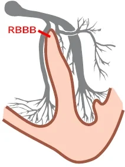
- Dày thất phải (right ventricular hypertrophy)
- Thuyên tắc phổi (pulmonary embolism)
- Bệnh tim thiếu máu cục bộ (ischemic heart disease)
- Bệnh cơ tim (cardiomyopathy)
- Tâm phế (cor pulmonale)
- Thường là một biến thể bình thường ở người khoẻ mạnh
Vector tim và RBBB
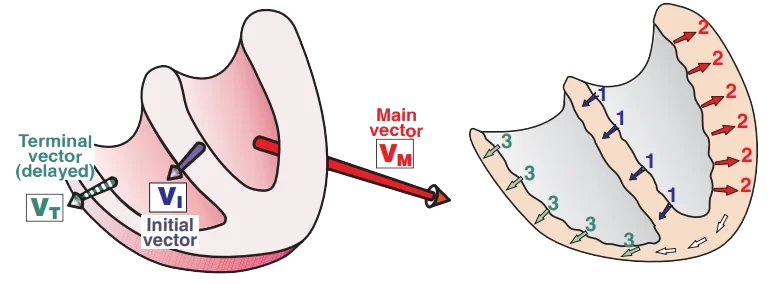
Khử cực thất trong block nhánh phải
- Hai thất được khử cực chỉ qua nhánh trái, xung động khử cực tuần tự
- Trong lúc các phần khác nhau của thất được khử cực, các vector tim được tạo ra
- 1. Trước tiên, vách liên thất được khử cực
- Một vector đầu (V_I) nhỏ được tạo ra, hướng sang phải (1)
- Vector này nhỏ vì khối cơ của vách liên thất nhỏ
- 2. Tiếp theo, thất trái được khử cực
- Xung động đi ra khỏi nhánh trái và khử cực khối cơ lớn của thất trái
- Một vector tim chính lớn nhất (V_M) được tạo ra, hướng sang trái (2)
- 3. Sau đó, thất phải được khử cực
- Xung động đi chậm sang thất phải qua cơ tim (không đi qua nhánh phải đã bị block)
- Phức bộ QRS giãn rộng ≥ 0,12s được tạo ra
- Một vector tận (V_T) nhỏ được tạo ra, hướng sang phải
- Xung động đi chậm sang thất phải qua cơ tim (không đi qua nhánh phải đã bị block)
- Cần hình dung các vector và các chuyển đạo ECG trong không gian ba chiều
- Nếu một vector hướng về phía một chuyển đạo, nó tạo ra một sóng dương
- Nếu một vector hướng xa một chuyển đạo, nó tạo ra một sóng âm
RBBB và các chuyển đạo (V1, V6)
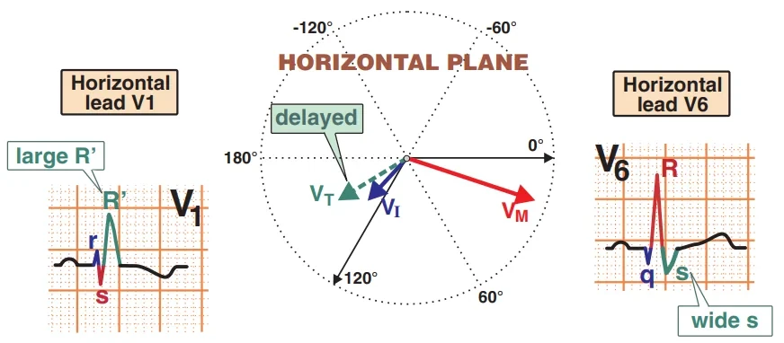
- Trong RBBB, các vector được "quan sát rõ nhất" ở các chuyển đạo ngực V1 và V6
- Nếu trên ECG có phức bộ QRS giãn rộng (≥ 0,12s), phải đánh giá ngay chuyển đạo V1 và V6
- Dùng chuyển đạo V1 và V6 để chẩn đoán:
- Block nhánh phải (RBBB)
- Block nhánh trái (LBBB)
Chuyển đạo (V1, V6) và block nhánh phải (RBBB)
- Hình cho thấy các vector được chiếu trên mặt phẳng ngang
- Quan sát các vector rõ nhất là với chuyển đạo V1 và V6
- 1. Một vector đầu (V_I) nhỏ được tạo ra, tạo nên
- Sóng r nhỏ (V1)
- Sóng q nhỏ (V6)
- 2. Một vector chính (V_M) rất lớn được tạo ra, tạo nên
- Sóng s nhỏ (V1)
- Sóng R lớn (V6)
- 3. Một vector tận (V_T) nhỏ được tạo ra, tạo nên
- Sóng R' lớn (V1)
- Sóng S rộng (V6)
- Ở V1, hình thành chữ "M"
- Ở V6, hình thành chữ "W"
ECG và RBBB
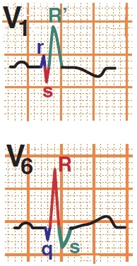
- QRS giãn rộng ≥ 0,12s (≥ 3 ô)
- Ở V1, QRS có dạng chữ "M"
- Cũng thấy ở các chuyển đạo bên phải khác (V1-V3)
- Tai thỏ thứ hai hầu như luôn lớn hơn
- Có thể biểu hiện với các dạng như: rsr', rsR', rSR'
- Ở V6, có sóng S rộng > 40ms
- Cũng thấy ở các chuyển đạo bên khác (V5-6, aVL, I)
- QRS có dạng chữ "W"
- Ở V1-V3, có ST chênh xuống hoặc sóng T âm
- Khử cực thất phải chậm trễ gây ra các biến đổi tái cực
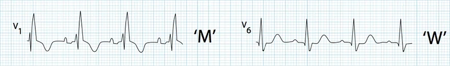
Block nhánh phải (RBBB)
- QRS giãn rộng ≥ 0,12s
- Nếu bề rộng QRS là 0,10-0,12s thì đó là RBBB không hoàn toàn
- V1 (rsR')
- V1 (sóng T âm)
- V6 (sóng S rộng)
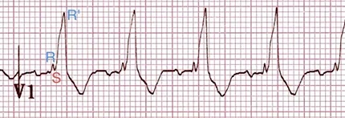
RBBB (V1)
- QRS giãn rộng ≥ 0,12s
- Sóng T âm
- V1 (dạng rsR')
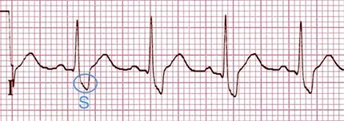
RBBB (V6)
- QRS giãn rộng ≥ 0,12s
- V6 (sóng S rộng)
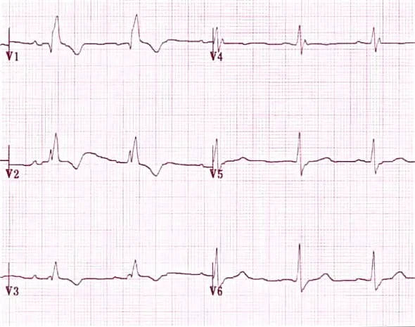
Block nhánh phải (V1-V6)
- QRS giãn rộng ≥ 0,12s
- V1 (rsR') và V2
- Sóng T âm (V1-V3)
- V6 (sóng S rộng) và V5
ECG và RBBB không hoàn toàn
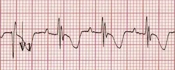
- Nhánh phải bị tổn thương nhưng không bị gián đoạn ("đứt")
- Dẫn truyền xung động chậm hơn
- Khác biệt duy nhất trên ECG so với block hoàn toàn là bề rộng của phức bộ QRS
- RBBB hoàn toàn
- Bề rộng QRS ≥ 0,12s
- RBBB không hoàn toàn
- Bề rộng QRS 0,1 - 0,12s
RBBB không hoàn toàn
- Bề rộng QRS 0,1s (0,1 - 0,12s)
- V1 (RSr')
- Sóng T âm
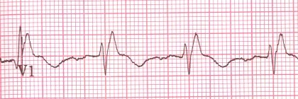
RBBB hoàn toàn
- Bề rộng QRS 0,18s (≥ 0,12s)
- V1 (rSR')
- Sóng T âm
RBBB cơ năng và hiện tượng Ashman
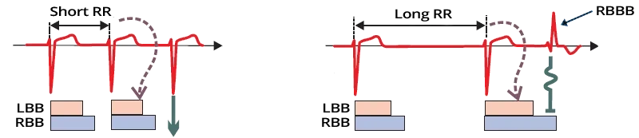
- Đây là một RBBB tạm thời, xuất hiện trên ECG rồi biến mất
- RBBB cơ năng (functional RBBB) xảy ra khi một xung động đến nhánh quá sớm, trong thời kỳ trơ
- Xung động đến sớm này có thể tới nhánh trong
- Ngoại tâm thu nhĩ (atrial extrasystole)
- Ngoại tâm thu bộ nối (junctional extrasystole)
- Rung nhĩ (atrial fibrillation)
- Khi khoảng RR dài ra, thời kỳ trơ của hệ thống dẫn truyền cũng dài ra
- Hiện tượng Ashman là dẫn truyền lệch hướng xảy ra khi một khoảng RR dài được tiếp nối bởi một khoảng RR ngắn
- Khoảng RR ngắn có thời kỳ trơ kéo dài
- Vốn chưa kịp ngắn lại từ khoảng RR dài trước đó
- Khoảng RR ngắn có thời kỳ trơ kéo dài
- Đúng là nhánh phải (RBB) có thời kỳ trơ dài hơn nhánh trái (LBB)
- Nếu một xung động đi qua nút AV xuống hai thất vào thời điểm
- Mà nhánh phải đang trong thời kỳ trơ
- Thì kết quả là RBBB cơ năng
- Block cơ năng thường gặp nhất trong rung nhĩ
- Khi một khoảng RR dài được tiếp nối bởi một khoảng RR ngắn với một phức bộ QRS (có hình dạng của RBBB)
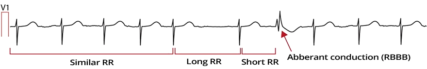
RBBB cơ năng và rung nhĩ
- Trên ECG, rung nhĩ ở chuyển đạo V1 với chuẩn thế 10mm
- Ban đầu, các khoảng RR tương đối đều
- Rồi xuất hiện một khoảng RR dài - ngắn
- RR dài làm kéo dài thời kỳ trơ
- RR ngắn kết thúc bằng dẫn truyền lệch hướng biểu hiện dạng RBBB
- Xung động của RR ngắn đi qua nhánh phải trong thời kỳ trơ và bị block
- Hiện tượng Ashman gặp nhiều nhất trong rung nhĩ
- Khi các khoảng RR thay đổi không đều
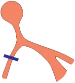
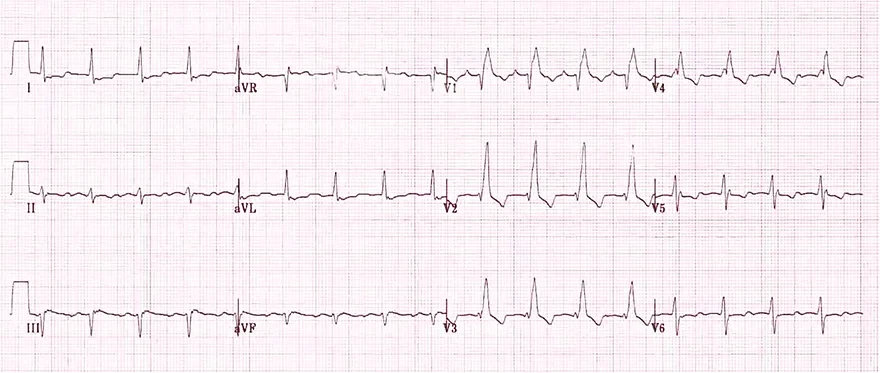
Block nhánh phải
- QRS giãn rộng ≥ 0,12s
- Ở V1 (V2) có qR
- Ở V6 (V5, I) có S rộng
- Ở V1-3 có sóng T âm
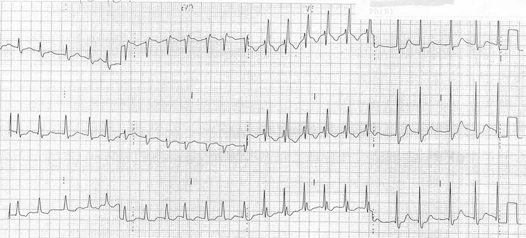
Block nhánh phải
- QRS giãn rộng ≥ 0,12s
- Ở V1 (V2) có rSR'
- Ở V6 (V5-6, I, aVL) có S rộng
- Ở V1-3 có sóng T âm
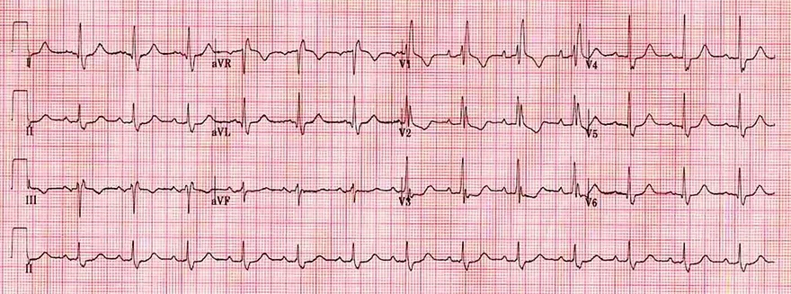
Block nhánh phải
- QRS giãn rộng ≥ 0,12s
- Ở V1 có rSR'
- Ở V6 (V5-6, I, aVL) có S rộng
- Ở V1-3 có sóng T âm
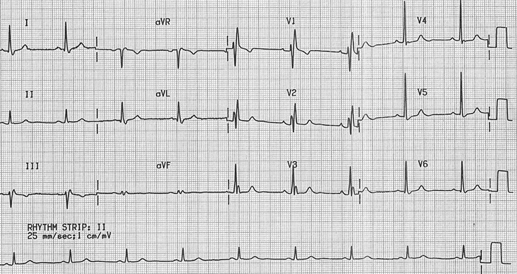
Block nhánh phải
- QRS giãn rộng ≥ 0,12s
- Ở V1 có rSR'
- Ở V6 (V5-6, I, aVL) có S rộng
- Ở V1 có một sóng T âm
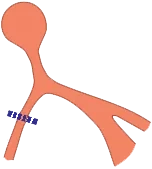
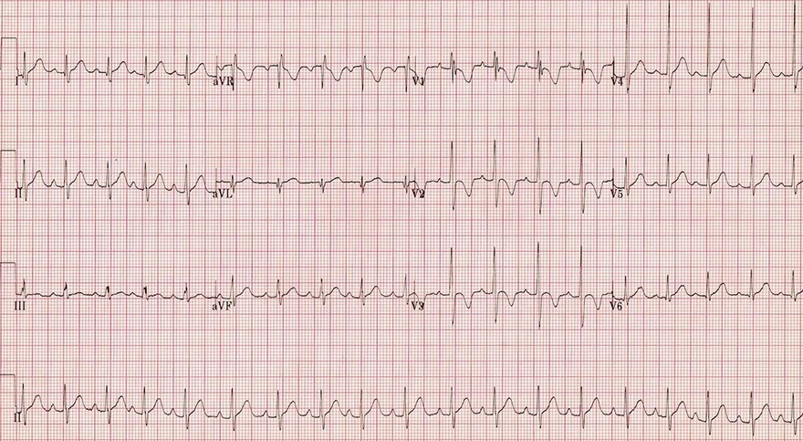
Block nhánh phải không hoàn toàn
- Ở V1 có RSr'
- Ở V5 và I có S rộng
- Ở V1-3 có sóng T âm
- QRS hẹp < 0,12s
- Bệnh nhân thoả tất cả tiêu chuẩn của RBBB, nhưng phức bộ QRS hẹp
- QRS hẹp chỉ ra RBBB không hoàn toàn
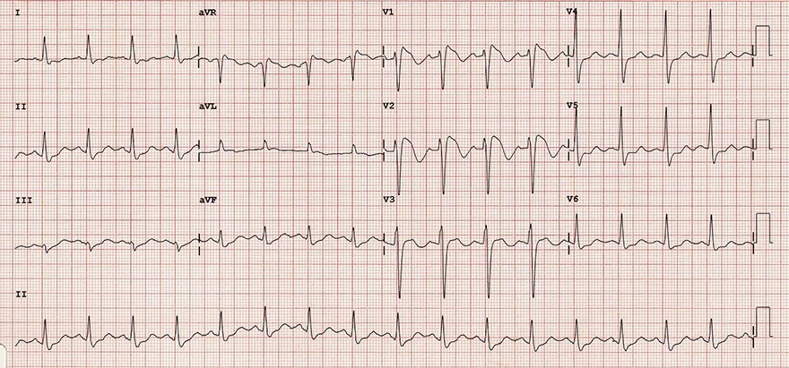
Hội chứng Brugada
- QRS giãn rộng ≥ 0,12s
- Ở V1 có rSR'
- Ở V5 có S rộng
- Ở V1-3 có sóng T âm và ST chênh lên dốc xuống
- ECG này giống RBBB, nhưng RBBB không có ST chênh lên dốc xuống ở V1-3
- ECG cho thấy hội chứng Brugada
9.2. Block nhánh trái (LBBB) — Điện tâm đồ
Block nhánh trái (Left Bundle Branch Block – LBBB)
Phức bộ QRS giãn rộng
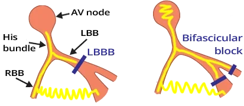
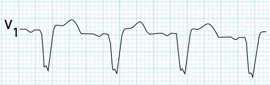
Phức bộ QRS giãn rộng (≥ 0,12s)
- Block nhánh trái (LBBB) có 2 biến thể:
- Block ở mức thân nhánh
- Block ở mức phân nhánh (lưu ý, đây không phải block hai phân nhánh)
- Trong LBBB, xung động bị block ở nhánh trái
- Xung động trên thất khử cực hai thất chỉ qua nhánh phải
- Xung động đi từ nhĩ xuống khử cực hai thất chỉ qua nhánh phải
- Trước tiên, thất phải được khử cực
- Và rồi xung động đi qua cơ tim sang thất trái và khử cực thất trái
- Xung động lan qua cơ tim chậm hơn so với khi đi trong các nhánh
- Vì vậy khử cực thất trái bị chậm trễ
- Do đó, phức bộ QRS sẽ giãn rộng ≥ 0,12s (≥ 3 ô nhỏ)
Nguyên nhân của LBBB
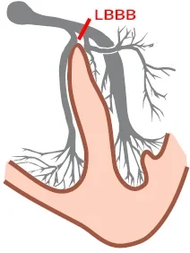
- LBBB thường xảy ra trong nhồi máu cơ tim thành trước
- Chẩn đoán nhồi máu cơ tim trong LBBB được hỗ trợ bởi tiêu chuẩn Sgarbossa
- Dày thất trái (left ventricular hypertrophy)
- Bệnh cơ tim (cardiomyopathy)
- Bệnh tim thiếu máu cục bộ (ischemic heart disease)
- Hẹp van động mạch chủ
- Tăng kali máu (hyperkalemia)
- Ngộ độc digoxin (digoxin toxicity)
Vector tim và LBBB
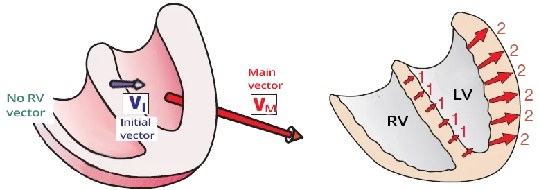
Khử cực thất trong block nhánh trái (LBBB)
- Hai thất được khử cực chỉ qua nhánh phải, xung động khử cực hai thất tuần tự
- Trong lúc các phần khác nhau của thất được khử cực, các vector tim được tạo ra
- 1. Trước tiên, vách liên thất được khử cực
- Vách được khử cực từ nhánh phải (nhánh nằm ở mặt phải của vách)
- Vector đầu (V_I) của vách hướng sang trái (1)
- Không xuất hiện sóng Q vách ở các chuyển đạo bên
- 2. Tiếp theo, thất phải được khử cực
- Xung động đi ra khỏi nhánh phải và khử cực một vùng nhỏ của thất phải
- Một vector thất phải nhỏ được tạo ra, không thấy được vì bị che lấp bởi vector lớn của thất trái
- 3. Sau đó, khối cơ lớn của thất trái được khử cực
- Xung động đi chậm sang thất trái qua cơ tim (không đi qua nhánh trái đã bị block)
- Phức bộ QRS giãn rộng ≥ 0,12s được tạo ra
- Vector tim chính (V_H) được tạo ra, hướng sang trái (2)
- Xung động đi chậm sang thất trái qua cơ tim (không đi qua nhánh trái đã bị block)
- Hãy hình dung các vector trong không gian ba chiều
- Nếu vector hướng về phía chuyển đạo ECG, một sóng dương được tạo ra
- Nếu vector hướng xa chuyển đạo ECG, một sóng âm được tạo ra
LBBB và các chuyển đạo (V1, V6)
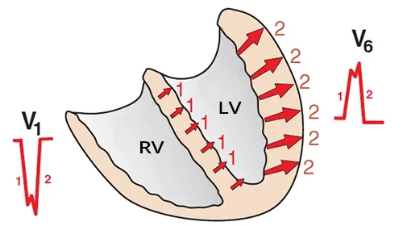
- Trong LBBB, các vector được "quan sát rõ nhất" ở các chuyển đạo ngực V1 và V6
- Nếu trên ECG có phức bộ QRS giãn rộng (≥ 0,12s), cần đánh giá ngay chuyển đạo V1 và V6
- Chuyển đạo V1 và V6 được dùng để chẩn đoán:
- Block nhánh phải
- Block nhánh trái
Chuyển đạo (V1, V6) và block nhánh trái
- Hình cho thấy các vector được chiếu trên mặt phẳng ngang
- Chuyển đạo V1 và V6 "quan sát rõ nhất" các vector
- 1. Một vector đầu (1) nhỏ của vách liên thất bắt đầu hình thành
- Sóng S (V1)
- Sóng R (V6)
- 2. Một vector chính (2) rất lớn của thất trái hình thành
- Sóng S (V1)
- Sóng R (V6)
- 3. Đồng thời với vector thất trái,
một vector thất phải nhỏ hình thành- Vector thất phải hình thành vào lúc thất trái đang khử cực, tạo nên một "khấc" rất nhỏ ở đỉnh sóng R và sóng S
- Ở V1, hình thành dạng chữ "W"
- Ở V6, hình thành dạng chữ "M"
Sóng Q vách
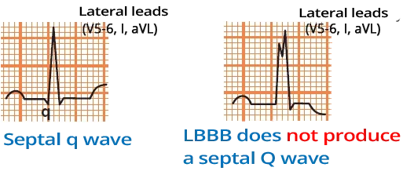
- Hình thành ở các chuyển đạo bên (V5-V6, I, aVL)
- Xuất hiện khi vách liên thất được khử cực đúng hướng (từ trái sang phải):
- Khi các nhánh còn nguyên vẹn
- Cũng gặp trong block nhánh phải
- Không gặp trong LBBB (vách được khử cực từ phải sang trái)
- Trong LBBB, vách được khử cực từ phải sang trái
- Vì vậy, không hình thành sóng Q ở các chuyển đạo bên
- Chỉ có thể hình thành ở chuyển đạo aVL
Nhồi máu vách liên thất và LBBB
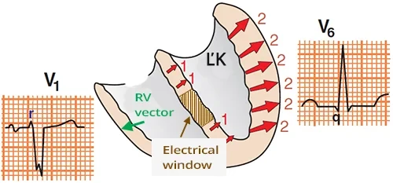
Nhồi máu vách liên thất và block nhánh trái
- Nhồi máu vách liên thất tạo ra một cửa sổ điện học (electrical window)
- Các chuyển đạo bên "nhìn" vào cửa sổ điện học sẽ "thấy" vector của thất phải
- Vector này hướng xa các chuyển đạo đó, dẫn tới
- Một sóng q nhỏ ở các chuyển đạo bên (I, V5, V6)
- Một sóng r nhỏ ở các chuyển đạo bên phải (V1, V2)
- Vector này hướng xa các chuyển đạo đó, dẫn tới
- Nếu có sóng q ở chuyển đạo bên trong LBBB
- Điều đó chỉ ra một nhồi máu vách liên thất (diễn tiến của nhồi máu)
- Đây không phải là khử cực vách liên thất
ECG và LBBB
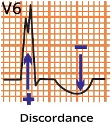
- QRS giãn rộng ≥ 0,12s (≥ 3 ô)
- Sóng S trội (V1)
- Sóng R trội (aVL, I, V5, V6)
- Không có sóng Q ở các chuyển đạo bên (I, V5, V6)
- Ở aVL, có thể có một sóng q
- Thời gian đạt đỉnh sóng R kéo dài > 60ms
- Thời gian từ khởi đầu phức bộ QRS đến đỉnh sóng R lớn hơn 60ms
- Bất tương hợp (discordance)
- Đoạn ST và sóng T hướng ngược chiều với phức bộ QRS.
- Giảm tiến triển sóng R
- Trục lệch trái
- Nếu LBBB mới xuất hiện, cần nghĩ đến:
- Nhồi máu thành trước (ST chênh lên ở V1-V3)
- Tiêu chuẩn Sgarbossa được dùng để chẩn đoán nhồi máu khi có LBBB
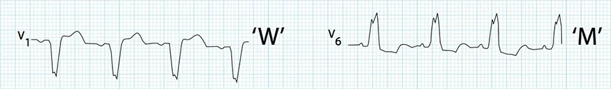
Block nhánh trái
- QRS giãn rộng ≥ 0,12s
- V1 (sóng S sâu)
- Giống chữ "W"
- V6 (sóng R trội)
- Giống chữ "M"
- Không có sóng Q
- Nếu QRS rộng 0,10-0,12s thì được coi là LBBB không hoàn toàn
Các biến thể QRS trong LBBB
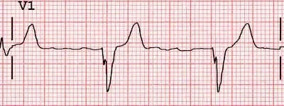
Dạng qrS "W" (V1)
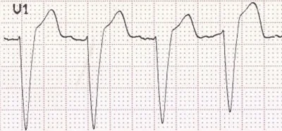
Dạng rS (V1)
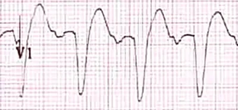
Dạng Q (QS) (V1)
Chuyển đạo V1 (V2)
- QRS có thể có các dạng sau:
- qrS "W"
- rS
- Q (QS)
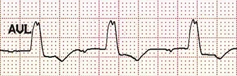
Dạng RsR "M" (aVL)
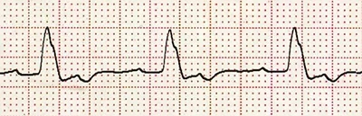
Dạng R (có khấc) (V6)
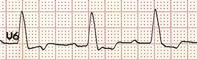
Dạng R (R một pha) (V6)
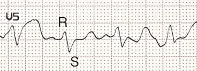
Dạng RS (V5)
Các chuyển đạo bên (V5-V6, I, aVL)
- QRS có thể có các dạng sau:
- RsR "M"
- R (có khấc)
- R (một pha)
- RS
ECG và LBBB không hoàn toàn
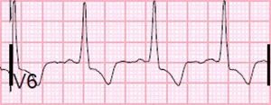
- Nhánh trái bị tổn thương nhưng không bị block ("đứt")
- Dẫn truyền xung động chậm hơn
- Khác biệt duy nhất trên ECG so với block hoàn toàn là bề rộng của phức bộ QRS
- LBBB hoàn toàn
- Bề rộng QRS ≥ 0,12s
- LBBB không hoàn toàn
- Bề rộng QRS 0,10 - 0,12s
LBBB không hoàn toàn (V6)
- Bề rộng QRS 0,1s
- S trội (V1)
- Bất tương hợp
- QRS dương và sóng T âm
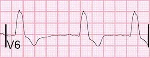
LBBB hoàn toàn (V6)
- Bề rộng QRS 0,2s
- S trội (V1)
- Bất tương hợp
- QRS dương và sóng T âm
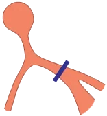
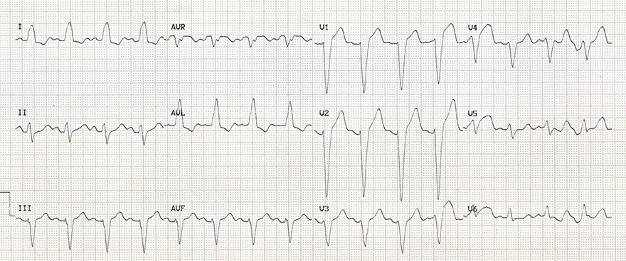
Block nhánh trái (LBBB)
- QRS giãn rộng ≥ 0,12s ( ≥ 3 ô )
- S sâu (V1)
- Dạng rS
- R trội (V6)
- Bất tương hợp
- Phức bộ QRS hướng ngược với sóng T (QRS âm và sóng T dương)
- Đánh giá tốt nhất ở (V1-V3)
- Nếu LBBB mới xuất hiện, cần nghĩ đến:
- Nhồi máu thành trước (ST chênh lên V1-V3)
- Chẩn đoán nhồi máu trong LBBB có thể nhờ tiêu chuẩn Sgarbossa
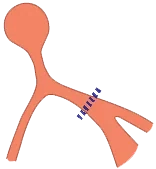
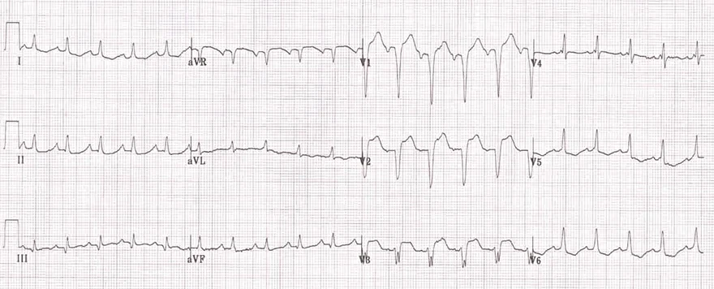
Block nhánh trái không hoàn toàn (iLBBB)
- QRS hẹp < 0,12s
- Bề rộng QRS là thông số chính để phân biệt iLBBB với LBBB hoàn toàn
- S sâu (V1)
- R trội (V6)
- Bất tương hợp
- Phức bộ QRS hướng ngược với sóng T
(QRS âm và sóng T dương) - Đánh giá tốt nhất ở (V1-V3)
- Phức bộ QRS hướng ngược với sóng T
- Nếu LBBB mới xuất hiện, cần nghĩ đến:
- Nhồi máu thành trước (ST chênh lên V1-V3)
- Chẩn đoán nhồi máu trong LBBB có thể nhờ tiêu chuẩn Sgarbossa
- Ở các chuyển đạo bên (aVL, I, V5, V6) ST chênh xuống dốc xuống là dấu hiệu của tăng gánh thất trái
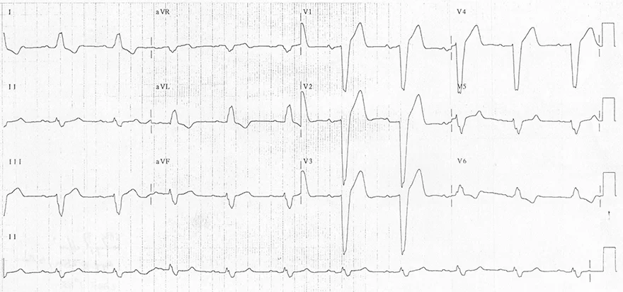
Block nhánh trái (LBBB)
- QRS giãn rộng ≥ 0,12s ( ≥ 3 ô )
- S sâu (V1)
- Dạng rS
- R trội (V6)
- Bất tương hợp
- Phức bộ QRS hướng ngược với sóng T (QRS âm và sóng T dương)
- Đánh giá tốt nhất ở (V1-V3)
- Nếu LBBB mới xuất hiện, cần nghĩ đến:
- Nhồi máu thành trước (ST chênh lên V1-V3)
- Chẩn đoán nhồi máu trong LBBB có thể nhờ tiêu chuẩn Sgarbossa
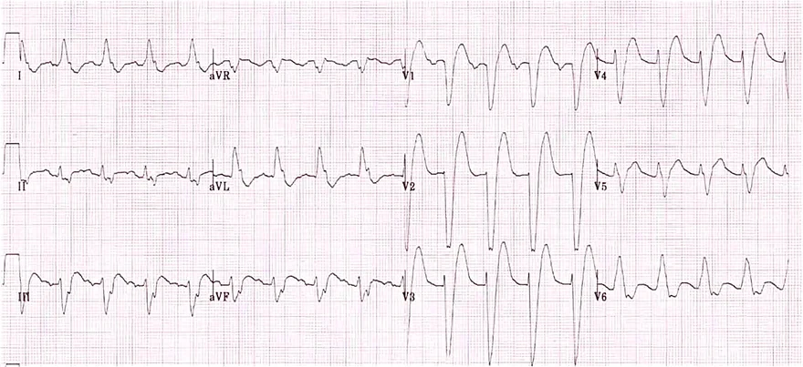
Block nhánh trái (LBBB)
- QRS giãn rộng ≥ 0,12s
- S sâu (V1)
- R trội (V6)
- Bất tương hợp
- Phức bộ QRS hướng ngược với sóng T (QRS âm và sóng T dương)
- Đánh giá tốt nhất ở (V1-V3)
- Nếu LBBB mới xuất hiện, cần nghĩ đến:
- Nhồi máu thành trước (ST chênh lên V1-V3)
- Chẩn đoán nhồi máu trong LBBB có thể nhờ tiêu chuẩn Sgarbossa
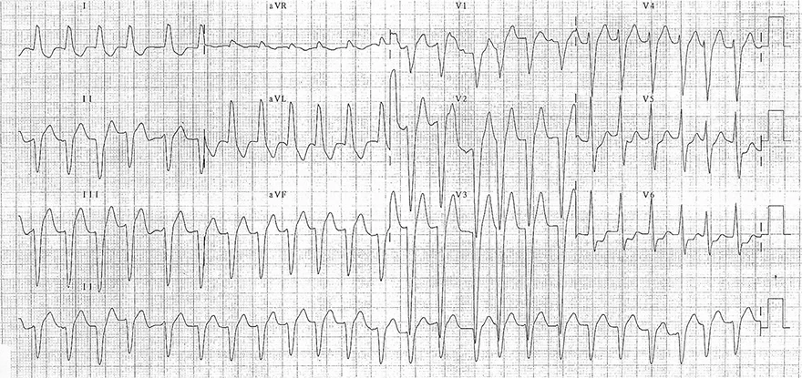
Block nhánh trái (LBBB) và rung nhĩ
- QRS giãn rộng ≥ 0,12s
- S sâu (V1)
- Dạng rS
- R trội (V6)
- Bất tương hợp
- Phức bộ QRS hướng ngược với sóng T (QRS âm và sóng T dương)
- Đánh giá tốt nhất ở (V1-V3)
- Nếu LBBB mới xuất hiện, cần nghĩ đến:
- Nhồi máu thành trước (ST chênh lên V1-V3)
- Chẩn đoán nhồi máu trong LBBB có thể nhờ tiêu chuẩn Sgarbossa
- Rung nhĩ
- Không có sóng P
- Tần số tim không đều (khoảng RR thay đổi)
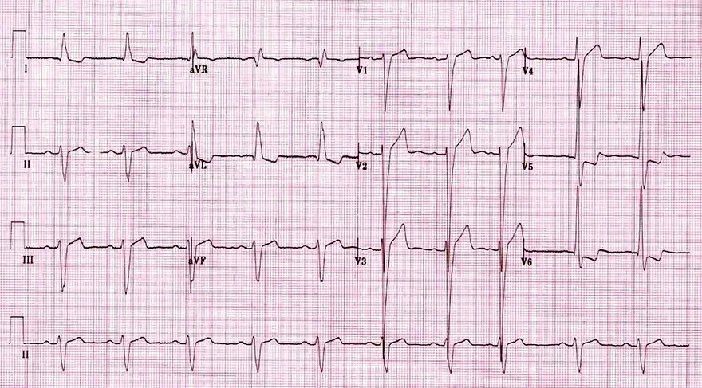
Dày thất trái
- ECG này giống LBBB, nhưng:
- Có sóng S và R rất lớn ở các chuyển đạo trước tim
- Điều đó chỉ ra dày thất trái vì đã thoả các tiêu chuẩn điện thế:
- Chỉ số Sokolow dương tính: S (V2) + R (V6) > 35mm
- Chỉ số McPhie dương tính: S (V2) + R (V6) > 40mm
- Trục lệch trái
- Ở các chuyển đạo bên (aVL, I, V5, V6) có ST chênh xuống dốc xuống
- Các biến đổi này xuất phát từ tăng gánh thất trái
- Ít gặp, dày thất và LBBB có thể cùng tồn tại
9.3. Block phân nhánh trái trước (LAFB) — Điện tâm đồ
Block nửa nhánh trái trước (Left Anterior Hemiblock – LAHB), block phân nhánh trái trước (Left Anterior Fascicular Block)
Nhánh trái
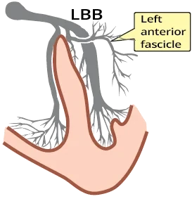
- Nhánh trái (LBB) chia thành:
- Phân nhánh trái trước
- Đi ra trước và sang bên
- Khử cực phần trước và phần bên của thất trái
- Phân nhánh trái sau
- Đi ra sau và xuống dưới
- Khử cực phần sau và phần dưới của thất trái
- Phân nhánh trái trước mảnh hơn phân nhánh trái sau
- Vì vậy block phân nhánh trái trước thường gặp hơn (98%)
- Block phân nhánh trái sau rất ít gặp (2%)
- Phân nhánh trái trước
Block phân nhánh trái trước
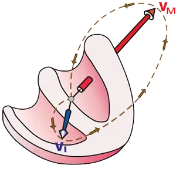
- Trong block phân nhánh trái trước:
- Phần dưới của thất trái được khử cực trước
- Qua phân nhánh sau
- Một vector đầu (V_I) nhỏ được tạo ra
- Rồi phần trên - bên được khử cực
- Qua cơ tim, vì phân nhánh trái trước đã bị block
- Một vector tim chính (V_H) được tạo ra và nó quay lên trên sang trái
- Phần dưới của thất trái được khử cực trước
Vector điện học và block phân nhánh trái trước
Block phân nhánh trái trước (chẩn đoán nhanh)
- Block phân nhánh trái trước được chẩn đoán bằng các chuyển đạo chi (I, II, III)
- Vector chính (V_H) hướng, trên mặt phẳng trán, lên trên sang trái
- Chuyển đạo I dương
- Chuyển đạo II và III âm
ECG và block phân nhánh trái trước
- Phức bộ QRS hẹp < 0,12s
- QRS giãn rộng nhẹ khoảng 20ms nhưng không vượt quá 0,12s
- Trục lệch trái > -30º (thường gặp nhất là -45º đến -90º)
- Chuyển đạo I dương
- Chuyển đạo II và III âm
- Thời gian đạt đỉnh sóng R kéo dài ở aVL > 45ms
- Thời gian từ khởi đầu phức bộ QRS đến đỉnh sóng R lớn hơn 45ms
- Do khử cực thất trái bị kéo dài
- Cụ thể là phần vốn phải được khử cực qua phân nhánh trước đã bị block
Chẩn đoán phân biệt
- Khi chẩn đoán block phân nhánh trái trước (LAFB), điều then chốt là phải loại trừ tất cả các nguyên nhân gây trục lệch trái:
- Block nhánh trái
- Dày thất trái
- STEMI thành dưới
- Ngoại tâm thu thất
- Nhịp máy tạo nhịp
- Hội chứng WPW
Block phân nhánh trái trước và nhồi máu vách - trước cũ
- Các chuyển đạo trước tim (V1-V2) được đặt cạnh ức ở khoang liên sườn 4
- Sóng P sinh lý (V1-V2) hai pha cân bằng (dương - âm)
- Chuyển đạo (V1-V2) được dùng để chẩn đoán phân biệt:
- Block phân nhánh trái trước với nhồi máu vách - trước cũ
Chẩn đoán phân biệt bằng V1-V2
- Điện cực V1-V2 đặt đúng ở khoang liên sườn 4
- Sóng P hai pha cân bằng
- Đôi khi có dạng QS ở V1-V2, có thể chỉ ra:
- Block phân nhánh trái trước, hoặc nhồi máu vách - trước cũ
- Nếu V1-V2 được đặt thấp hơn (khoang liên sườn 6)
- Sóng P một pha dương
- Xuất hiện dạng rS (V1-V2)
- Điều này chỉ ra block phân nhánh trái trước
- Nhồi máu cũ vẫn sẽ có dạng QS (không có sóng r)
- Nếu V1-V2 được đặt cao hơn (khoang liên sườn 2)
- Sóng P một pha âm
Block phân nhánh trái trước
- Phức bộ QRS hẹp (< 0,12s)
- Trục lệch trái (> -30º)
- QRS dương ở chuyển đạo I
- QRS âm ở chuyển đạo II và III
Block phân nhánh trái trước
- Phức bộ QRS hẹp (< 0,12s)
- Trục lệch trái (> -30º)
- QRS dương ở chuyển đạo I
- QRS âm ở chuyển đạo II và III
Block ba phân nhánh (block phân nhánh trái trước + block AV độ 1 + RBBB)
- Block ba phân nhánh là sự kết hợp của 3 block:
- Block phân nhánh trái trước
- QRS dương ở chuyển đạo I
- QRS âm ở chuyển đạo II và III
- Block AV độ 1
- Khoảng PQ kéo dài > 0,2s
- Block nhánh phải (RBBB)
- QRS giãn rộng > 0,12s
- rSR' ở chuyển đạo V1
- Sóng S lớn ở chuyển đạo V6
- Block phân nhánh trái trước
9.4. Block phân nhánh trái sau (LPFB) — Điện tâm đồ
Block nửa nhánh trái sau (Left Posterior Hemiblock – LPHB), block phân nhánh trái sau (Left Posterior Fascicular Block)
Nhánh trái
- Nhánh trái (LBB) sau một đoạn ngắn chia thành:
- Phân nhánh trái trước
- Đi ra trước và sang bên
- Khử cực phần trước và phần bên của thất trái
- Phân nhánh trái sau
- Đi ra sau và xuống dưới
- Khử cực phần sau và phần dưới của thất trái
- Phân nhánh trái trước mảnh hơn phân nhánh trái sau
- Block phân nhánh trái trước vì vậy thường gặp hơn (98%)
- Block phân nhánh trái sau rất ít gặp (2%)
- Phân nhánh trái trước
Block phân nhánh trái sau
- Phân nhánh trái sau dày và có cấp máu kép
- Block phân nhánh trái sau
- Chỉ ra tổn thương mạch máu lan rộng của tim
- Hầu như luôn xuất hiện cùng với block nhánh phải (RBBB)
(block hai phân nhánh) - Có tiên lượng rất xấu
- Có nguy cơ block AV độ 3
- Trong block phân nhánh trái sau
- Phần bên của thất trái được khử cực trước
- Qua phân nhánh trước
- Một vector đầu (V_I) nhỏ được tạo ra
- Rồi phần dưới của hai thất được khử cực
- Qua cơ tim, vì phân nhánh trái sau đã bị block
- Vector tim chính (V_H) được tạo ra và quay sang phải
- Phần bên của thất trái được khử cực trước
Vector điện học và block phân nhánh trái sau
Block phân nhánh trái sau (chẩn đoán nhanh)
- Block phân nhánh trái sau được chẩn đoán bằng các chuyển đạo chi (I, II, III)
- Vector chính (V_H) hướng, trên mặt phẳng trán, xuống dưới sang phải
- Chuyển đạo I âm
- Chuyển đạo III dương
- Sóng R ở III > aVF > II
ECG và block phân nhánh trái sau
- Phức bộ QRS hẹp < 0,12s
- QRS giãn rộng khoảng 20ms, nhưng không vượt quá 0,12s
- Trục lệch phải > 90º
- Chuyển đạo I âm
- Chuyển đạo III dương
- Sóng R ở III > aVF > II
- Thời gian đạt đỉnh sóng R kéo dài ở aVF > 45ms
- Từ khởi đầu phức bộ QRS đến đỉnh sóng R lớn hơn 45ms
- Vì khử cực phần dưới của thất trái bị kéo dài
- Phần vốn phải được khử cực qua phân nhánh sau đã bị block
- LPFB hầu như luôn xuất hiện cùng với RBBB (block hai phân nhánh)
Chẩn đoán phân biệt
- Khi chẩn đoán LPFB, phải loại trừ tất cả các nguyên nhân gây trục lệch phải:
- Dày thất phải
- Thuyên tắc phổi (tăng gánh tim phải cấp)
- STEMI thành bên
- Bệnh phổi tắc nghẽn mạn tính (COPD)
- Tăng kali máu
- Ngộ độc thuốc chống trầm cảm ba vòng
- Hội chứng WPW
- Tim sang phải (dextrocardia)
- Ngoại tâm thu thất
- Biến thể bình thường ở trẻ em
- Tim ở vị thế đứng (bệnh nhân gầy và cao)
Block phân nhánh trái sau
- Phức bộ QRS hẹp (< 0,12s)
- Trục lệch phải (>90°)
- QRS âm ở chuyển đạo I
- QRS dương ở chuyển đạo III
- Phải loại trừ tất cả các nguyên nhân gây trục lệch phải ở bệnh nhân
- LPFB hầu như luôn xuất hiện cùng với RBBB (block hai phân nhánh)
Block phân nhánh trái sau
- Phức bộ QRS hẹp (< 0,12s)
- Trục lệch phải (>90°)
- QRS âm ở chuyển đạo I
- QRS dương ở chuyển đạo III
- Phải loại trừ tất cả các nguyên nhân gây trục lệch phải ở bệnh nhân
- LPFB hầu như luôn xuất hiện cùng với RBBB (block hai phân nhánh)
Block phân nhánh trái sau
- Phức bộ QRS hẹp (< 0,12s)
- Trục lệch phải (>90°)
- QRS âm ở chuyển đạo I
- QRS dương ở chuyển đạo III
- Phải loại trừ tất cả các nguyên nhân gây trục lệch phải ở bệnh nhân
- LPFB hầu như luôn xuất hiện cùng với RBBB (block hai phân nhánh)
Block phân nhánh trái sau
- Phức bộ QRS hẹp (< 0,12s)
- Trục lệch phải (>90°)
- QRS âm ở chuyển đạo I
- QRS dương ở chuyển đạo III
- Phải loại trừ tất cả các nguyên nhân gây trục lệch phải ở bệnh nhân
- LPFB hầu như luôn xuất hiện cùng với RBBB (block hai phân nhánh)
Block hai phân nhánh (LPFB + iRBBB)
- Block phân nhánh trái sau (LPFB)
- Trục lệch phải (>90°)
- QRS âm ở chuyển đạo I
- QRS dương ở chuyển đạo III
- Trục lệch phải (>90°)
- Block nhánh phải không hoàn toàn (iRBBB)
- QRS không giãn rộng < 0,12s
- RsR (V1)
- Sóng S sâu và rộng (V6)
- Nhịp nhanh xoang
- Tần số tim: 150/phút.
Block hai phân nhánh (LPFB + RBBB)
- Block phân nhánh trái sau (LPFB)
- Trục lệch phải (>90°)
- QRS âm ở chuyển đạo I
- QRS dương ở chuyển đạo III
- Trục lệch phải (>90°)
- Block nhánh phải (RBBB)
- QRS giãn rộng > 0,12s
- rsR (V1)
- Sóng S sâu và rộng (V6)
Block hai phân nhánh (LPFB + RBBB)
- Block phân nhánh trái sau (LPFB)
- Trục lệch phải cực độ (>90°)
- QRS âm ở chuyển đạo I
- QRS hai pha ở chuyển đạo III
- Trục lệch phải cực độ (>90°)
- Block nhánh phải (RBBB)
- QRS giãn rộng > 0,12s
- sR (V1)
- Sóng S sâu và rộng (V6)
9.5. Block hai phân nhánh — Điện tâm đồ
Block hai phân nhánh (Bifascicular Block — RBBB kèm theo LAFB hoặc LPFB)
Hệ thống dẫn truyền thất
- Hệ thống dẫn truyền ở hai thất có 3 đường:
- Nhánh phải (RBBB)
- Nhánh trái chia thành:
- Phân nhánh trái trước (LAF)
- Phân nhánh trái sau (LPF)
- Khi một đường bị gián đoạn, các block xuất hiện:
- Block nhánh phải (RBBB)
- Block nhánh trái (LBBB)
- Block nửa nhánh trái trước (LAH)
- Block nửa nhánh trái sau (LPH)
Block hai phân nhánh
- Trong block hai phân nhánh, 2 đường dẫn truyền thất bị block đồng thời
- Block hai phân nhánh có 2 tổ hợp:
- RBBB + LAH (block nhánh phải + block nửa nhánh trái trước)
- RBBB + LPH (block nhánh phải + block nửa nhánh trái sau)
- Hai thất được khử cực chỉ qua một phân nhánh còn nguyên vẹn, phân nhánh này xuất phát từ nhánh trái
- Nếu phân nhánh còn nguyên vẹn đó bị block
- Thì kết quả là block AV độ 3 (nhĩ và thất bị cô lập điện học hoàn toàn với nhau)
- Chứ không phải block ba phân nhánh
- Nếu phân nhánh còn nguyên vẹn đó bị block
- Phân nhánh trái sau dày hơn phân nhánh trước và có cấp máu kép
- Nếu phân nhánh trái sau bị tổn thương thì thường là có tổn thương mạch máu lan rộng, và hầu như luôn dẫn tới RBBB
- Vì vậy LPH hầu như luôn là một phần của block hai phân nhánh (RBBB + LPH)
- Block nửa nhánh trái sau có tiên lượng xấu, bất kể nó có nằm trong một block hai phân nhánh hay không
- LAH + LPH không phải là block hai phân nhánh
- Hai đường bị block, nhưng đó là một block nhánh trái (LBBB)
- Nhánh trái có thể bị block ở 2 vị trí
- Ở thân nhánh (ngay trên chỗ chia đôi thành các phân nhánh)
- Ở mức các phân nhánh trái và phải, và trường hợp này không được coi là block hai phân nhánh
ECG và block hai phân nhánh
- Block hai phân nhánh có 2 biến thể (luôn luôn có RBBB):
- RBBB + LAH (block nhánh phải + block nửa nhánh trái trước)
- RBBB + LPH (block nhánh phải + block nửa nhánh trái sau)
Block nhánh phải (RBBB)
- QRS giãn rộng ≥ 0,12s
- Nếu QRS rộng 0,10-0,12s thì đó là RBBB không hoàn toàn
- V1 (rsR')
- Giống chữ "M", với tai thỏ thứ hai lớn hơn
- V1 (sóng T âm)
- V6 (sóng S rộng)
- Giống chữ "W"
Block nửa nhánh trái trước
- Phức bộ QRS hẹp (< 0,12s)
- Trục lệch trái (> -30º)
- QRS dương ở chuyển đạo I
- QRS âm ở chuyển đạo II, III
Block nửa nhánh trái sau
- Phức bộ QRS hẹp (< 0,12s)
- Trục lệch phải (>90°)
- QRS âm ở chuyển đạo I
- QRS dương ở chuyển đạo III
Block hai phân nhánh (RBBB + block nửa nhánh trái trước)
- Block nhánh phải (RBBB)
- QRS giãn rộng ≥ 0,12s
- rSR' ở V1 (tai thỏ thứ hai lớn hơn)
- Sóng S sâu ở V6
- Block phân nhánh trái trước (ĽPH)
- QRS dương ở chuyển đạo I
- QRS âm ở chuyển đạo II và III
Block hai phân nhánh (RBBB + block nửa nhánh trái sau)
- Block nhánh phải (RBBB)
- QRS giãn rộng ≥ 0,12s
- rSR' ở V1 (tai thỏ thứ hai lớn hơn)
- Sóng S rộng ở V6
- Block phân nhánh trái sau (ĽZH)
- QRS âm ở chuyển đạo I
- QRS dương ở chuyển đạo III
Block hai phân nhánh (RBBB + block nửa nhánh trái trước)
- Block nhánh phải (RBBB)
- QRS giãn rộng ≥ 0,12s
- rSR' ở V1 (tai thỏ thứ hai lớn hơn)
- Sóng S sâu ở V6
- Block nửa nhánh trái trước (ĽPH)
- QRS dương ở chuyển đạo I
- QRS âm ở chuyển đạo II và III
Block hai phân nhánh (iRBBB + block nửa nhánh trái sau)
- Block nhánh phải không hoàn toàn (iRBBB)
- QRS hẹp < 0,12s
- RSR' ở V1
- Sóng S rộng ở V6
- Block nửa nhánh trái sau (ĽZH)
- QRS âm ở chuyển đạo I
- QRS dương ở chuyển đạo III
- Nhịp nhanh xoang: 150/phút.
Block hai phân nhánh (RBBB + block nửa nhánh trái sau)
- Block nhánh phải (RBBB)
- QRS giãn rộng ≥ 0,12s
- rSR' ở V1 (tai thỏ thứ hai lớn hơn)
- Sóng S rộng ở V6
- Block nửa nhánh trái sau (ĽZH)
- QRS chủ yếu âm ở chuyển đạo I
- QRS dương ở chuyển đạo III
Block hai phân nhánh (RBBB + block nửa nhánh trái sau)
- Block nhánh phải (RBBB)
- QRS giãn rộng ≥ 0,12s
- rSR' ở V1 (tai thỏ thứ hai lớn hơn)
- Sóng S rộng ở V6
- Block nửa nhánh trái sau (ĽZH)
- QRS âm ở chuyển đạo I
- QRS hai pha ở chuyển đạo III
- Trục lệch phải cực độ
9.6. Block ba phân nhánh — Điện tâm đồ
Block ba phân nhánh (trifascicular block)
Hệ thống dẫn truyền thất
- Hệ thống dẫn truyền ở hai thất có 3 đường:
- Nhánh phải (RBB)
- Nhánh trái chia thành:
- Phân nhánh trái trước (LAF)
- Phân nhánh trái sau (LPF)
- Khi một đường bị gián đoạn, các block xuất hiện:
- Block nhánh phải (RBBB)
- Block nhánh trái (LBBB)
- Block phân nhánh trái trước (LAFB)
- Block phân nhánh trái sau (LPFB)
- Trong trường hợp bộ nối nhĩ - thất hoạt động bất thường, các block AV xuất hiện:
- Block AV độ 1
- Block AV độ 2 - Mobitz I (Wenckebach)
- Block AV độ 2 - Mobitz II
- Block AV độ 3 (block AV hoàn toàn)
Block ba phân nhánh
- Cả 3 đường dẫn truyền thất đều bị ảnh hưởng
- Mỗi đường có thể bị ảnh hưởng hoàn toàn hoặc không hoàn toàn
- Luôn luôn có một đường không bị block hoàn toàn
- Block hoàn toàn cả 3 đường chính là block AV độ 3 (block AV hoàn toàn)
- Nhĩ và thất không còn liên hệ điện học với nhau
- Block nhánh trái (LBBB) về bản chất là một block của 2 đường
- Vì cả phân nhánh trái trước và phân nhánh trái sau đều bị block
- Trong LBBB, liên hệ điện học duy nhất (giữa nhĩ và thất) là
- Bộ nối nhĩ - thất, nối tiếp thành nhánh phải
- Các rối loạn dẫn truyền ở bộ nối nhĩ - thất được gọi là các block AV
- Thuật ngữ block ba phân nhánh rất chung
- Một block ba phân nhánh luôn phải được mô tả cụ thể hơn
Các biến thể của block ba phân nhánh
- Block ba phân nhánh
- Là một tổ hợp của các block AV và các block nhánh, trong đó cả 3 đường đều bị ảnh hưởng
- Biến thể thường gặp nhất của block ba phân nhánh là:
- Block hai phân nhánh + block AV độ 1
- Các biến thể của block ba phân nhánh:
- Block nhánh luân phiên (RBBB/LBBB)
- Block hai phân nhánh luân phiên (RBBB + LAF/LPF)
- RBBB + block AV độ 2 - Mobitz II
- LBBB + block AV độ 2 - Mobitz II
- Block hai phân nhánh + block AV độ 1
- LBBB + block AV độ 1
- Block hai phân nhánh + block AV độ 2 - Mobitz I
- LBBB + block AV độ 2 - Mobitz I
- Block ba phân nhánh hoàn toàn
Block nhánh luân phiên
- Luân phiên giữa RBBB và LBBB
- Trên ECG, các dạng RBBB và LBBB xuất hiện luân phiên
Block hai phân nhánh luân phiên
- Block hai phân nhánh có 2 biến thể
- RBBB + LAFB
- RBBB + LPFB
- Trên ECG, cả hai biến thể xuất hiện luân phiên
RBBB + block AV độ 2 (Mobitz II)
- Đây là RBBB và block AV độ 2 (Mobitz II)
- Block AV độ 2 - Mobitz II
- Là một rối loạn dẫn truyền gián đoạn
- Hầu như luôn (75%) ở dưới bó His (ở mức các nhánh)
- Trên ECG, sẽ thấy RBBB và block AV độ 2 (Mobitz II)
LBBB + block AV độ 2 - Mobitz II
- Đây là LBBB và block AV độ 2 (Mobitz II)
- Block AV độ 2 - Mobitz II
- Là một rối loạn dẫn truyền gián đoạn
- Hầu như luôn (75%) ở dưới bó His (ở mức các nhánh)
- Trên ECG, sẽ thấy LBBB và block AV độ 2 (Mobitz II)
Block hai phân nhánh + block AV độ 1
- Đây là block hai phân nhánh và block AV độ 1
- Đây là biến thể thường gặp nhất của block ba phân nhánh
- Trên ECG, sẽ thấy block hai phân nhánh và block AV độ 1
LBBB + block AV độ 1
- Đây là LBBB và block AV độ 1
- Trên ECG, sẽ thấy LBBB và block AV độ 1
Block hai phân nhánh + block AV độ 2 (Mobitz I)
- Đây là block hai phân nhánh và block AV độ 2 (Mobitz I)
- Nút AV biểu hiện hiện tượng Wenckebach
- Khoảng PQ dài dần ra cho đến khi một sóng P bị block
- Nút AV biểu hiện hiện tượng Wenckebach
- Trên ECG, sẽ thấy block hai phân nhánh và block AV độ 2 - Mobitz I
LBBB + block AV độ 2 (Mobitz I)
- Đây là LBBB và block AV độ 2 (Mobitz I)
- Nút AV biểu hiện hiện tượng Wenckebach
- Khoảng PQ dài dần ra cho đến khi một sóng P bị block
- Nút AV biểu hiện hiện tượng Wenckebach
- Trên ECG, sẽ thấy LBBB và block AV độ 2 - Mobitz I
Block ba phân nhánh hoàn toàn
- Block ba phân nhánh hoàn toàn
- Cả 3 đường đều bị block hoàn toàn
- Đây là một block AV độ 3 (block AV hoàn toàn)
- Có phân ly nhĩ - thất
- Nhĩ và thất bị cô lập điện học với nhau
Block ba phân nhánh (block hai phân nhánh + block AV độ 1)
- Biến thể thường gặp nhất của block ba phân nhánh
- Là block hai phân nhánh + block AV độ 1
- Block hai phân nhánh
- Block nhánh phải (RBBB)
- QRS giãn rộng ≥ 0,12s
- rsR (V1)
- S sâu (V6)
- Block nửa nhánh trái trước (LAH)
- QRS dương (I)
- QRS âm (II, III)
- Block nhánh phải (RBBB)
- Block AV độ 1
- Khoảng PQ kéo dài > 0,2s
Block ba phân nhánh (block hai phân nhánh + block AV độ 1)
- Biến thể thường gặp nhất của block ba phân nhánh
- Là block hai phân nhánh + block AV độ 1
- Block hai phân nhánh
- Block nhánh phải (RBBB)
- QRS giãn rộng ≥ 0,12s
- rsR (V1)
- S sâu (V6)
- Block nửa nhánh trái trước (LAH)
- QRS dương (I)
- QRS âm (II, III)
- Block nhánh phải (RBBB)
- Block AV độ 1
- Khoảng PQ kéo dài > 0,2s
Block ba phân nhánh (block nhánh luân phiên)
- Ở đầu đoạn ECG là block nhánh trái (LBBB)
- Sau một ngoại tâm thu nhĩ
- Có sự chuyển sang block nhánh phải (RBBB)
- Điều đó chỉ ra tổn thương nặng hệ thống dẫn truyền
- Cả hai nhánh đều bị tổn thương
- Khoảng PQ trong lúc có LBBB dài hơn khoảng PQ trong lúc có RBBB
- Điều này chỉ ra rằng nhánh phải bị tổn thương nhiều hơn
- Vì cần nhiều thời gian hơn để khử cực hai thất
- Điều này chỉ ra rằng nhánh phải bị tổn thương nhiều hơn
- Bệnh nhân như vậy có thể tiến triển thành
- Block AV độ 2 - Mobitz II
- Block AV độ 3
- Bệnh nhân với ECG kiểu này có chỉ định cấy máy tạo nhịp
- Block nhánh luân phiên được coi là một block ba phân nhánh
Block ba phân nhánh hoàn toàn (block AV độ 3)
- Phân ly nhĩ - thất
- Nhĩ (sóng P) và thất (phức bộ QRS) hoạt động độc lập
- Nhĩ có tần số riêng và thất có tần số riêng
- Phức bộ QRS của thất có hình dạng của (RBBB và LPFB)
- Nhịp thoát thất có ổ ngoại vị ở
- Vùng của phân nhánh trái sau
- Nhịp thoát thất có ổ ngoại vị ở
- Block AV độ 3 với dạng block hai phân nhánh
- Đôi khi được gọi là block ba phân nhánh hoàn toàn
Nguồn tài liệu (Sources)
Nguồn: ECG BOOK — www.ecgbook.com (6 bài: /rbbb, /lbbb, /lafb, /lpfb, /bifascicular-block, /trifascicular-block)
- ECG from Basics to Essentials Step by Step
- litfl.com
- ecgwaves.com
- metealpaslan.com
- medmastery.com
- uptodate.com
- ecgpedia.org
- wikipedia.org
- Strong Medicine
- Understanding Pacemakers